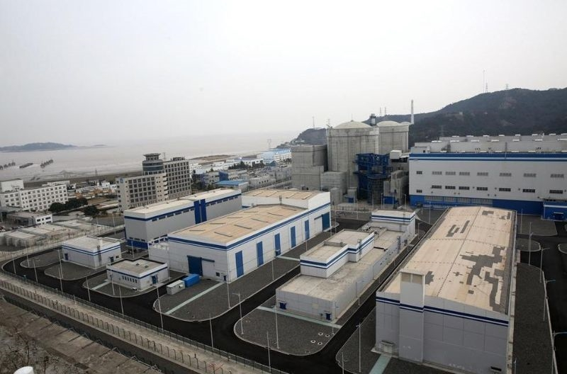

地理位置
方家山核电厂位于中国浙江省秦山镇，是秦山核电基地的重要组成部分，采用压水堆技术。
堆形与数量
2台百万千瓦级压水堆核电机组。
发电基本原理
方家山核电厂采用成熟的压水堆技术，其发电过程包括以下三大循环：
- 一回路： 核燃料在反应堆中通过核裂变释放能量，高温高压水将热量传递给二回路水，完成第一循环。
- 二回路： 二回路中的水在蒸汽发生器内吸收热量，变成高压蒸汽推动汽轮机发电，完成第二循环。
- 三回路： 冷凝器利用海水或其他冷却介质使蒸汽冷凝，形成循环水系统，完成第三循环。
功用与贡献
方家山核电工程所在的秦山核电基地是我国大陆核电的发源地，也是核电“走出去”战略的起点。自1985年首台核电机组开工以来，经过30多年发展，秦山实现了从30万千瓦到100万千瓦的自主跨越，形成了安全环保、自主创新、群堆管理等特色，为核电事业发展奠定了基础。截至2014年10月，基地累计安全发电3268.16亿千瓦时，相当于节约标准煤1.05亿吨，减排二氧化碳3.43亿吨，造林93.31万公顷。
